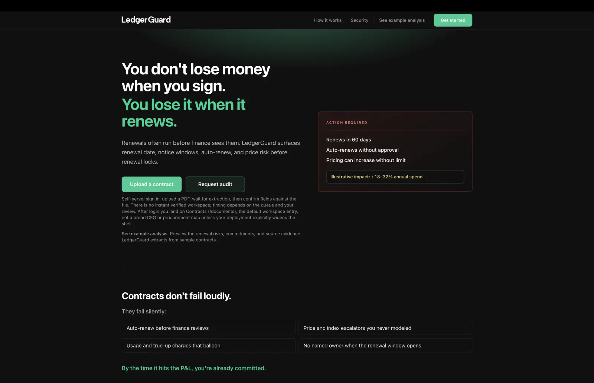
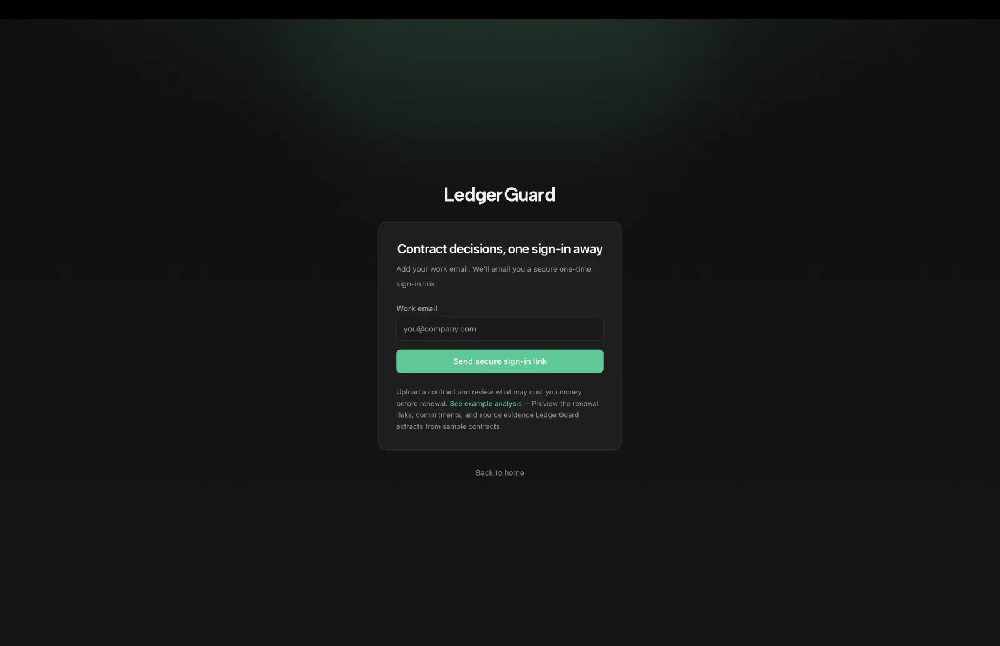
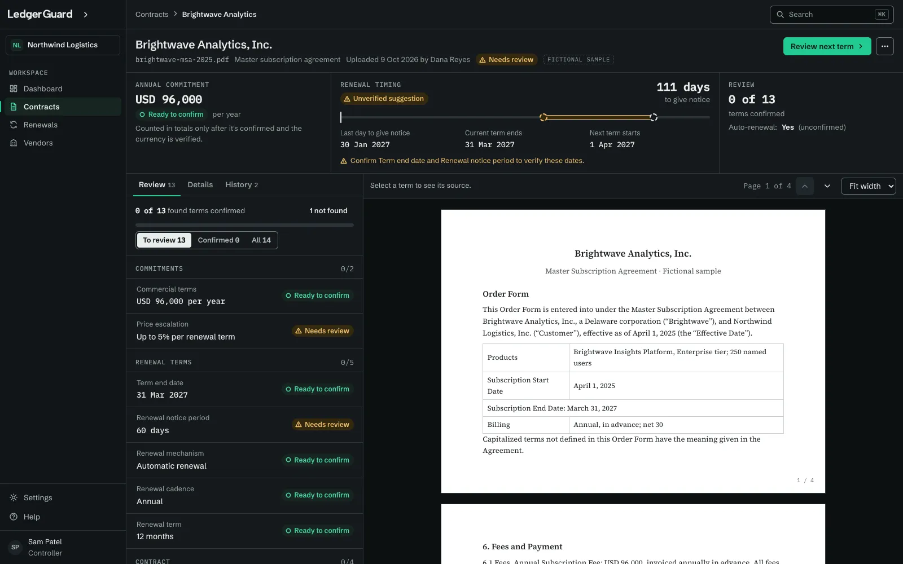

LedgerGuard tracks contract renewals, commitments, notice windows, and financial exposure.
I designed and built it alone: the product, the API, the data model, the document
pipeline, billing, infrastructure, and delivery.
Screenshot · Dashboard. The dashboard keeps review state, contract visibility, and
renewal workflows legible without treating extraction output as final by default.
Context
A Next.js App Router application sits in front of a Node.js/Fastify API, Supabase
PostgreSQL/Auth/Storage, Redis/BullMQ orchestration, and a Python worker running AWS
Textract and OpenAI extraction. Every tenant boundary, job contract, and API surface
in that list is one I had to define, because there was nobody else to define them.
Problem
Extraction output is useless if the interface makes it look settled. Someone deciding
whether to exercise a notice window needs to know whether a date came out of a model
or out of a person confirming it against the document. The workflow had to carry that
distinction from the database through to the screen, and stay legible while extraction
was still running, partially done, or failed.
My role
Product direction, architecture, implementation, testing, infrastructure, and
release, across the whole stack.
Built the Next.js App Router product, the Fastify API, the PostgreSQL data model,
authentication and tenant scoping, background-job orchestration, and the Python
worker integration.
Set the rule the rest of the product follows: suggested values and confirmed values
are stored differently, rendered differently, and only cross the boundary through
explicit review.
What I built
Document ingestion and upload flows wired to async extraction state.
Tenant-aware dashboard navigation and the review surfaces for contract data.
A verification UI that keeps suggested values visually and structurally apart from
confirmed ones, with source context attached.
Renewal and portfolio views that stay honest about which records are still
incomplete.
API contracts, authentication, billing, job orchestration, Docker setup, and the
CI/CD pipeline.
Technical decisions
Note 1
Keep deterministic contract data and API rules in Node.js/Fastify while isolating
probabilistic extraction in the Python worker behind explicit job contracts.
Why
The product needed retryable document processing without allowing AI output to
bypass authentication, tenant boundaries, or user confirmation.
Trade-off
The separation adds Redis/BullMQ orchestration, worker lifecycle handling, and
more API contracts to maintain.
Result
Background extraction can fail or retry independently while deterministic
contract state remains controlled by the application and user review.
Note 2
Draw a hard line in the App Router between server-rendered product surfaces and the
client components that handle review interactions.
Why
Review is the only genuinely interactive part of the product. Everything else is
composition and data fetching, and treating it that way keeps the client bundle
and the state surface small.
Trade-off
It takes more up-front structure than pushing the whole dashboard into one
client-heavy tree, and every new feature has to be placed on one side of the
line deliberately.
Result
Route, data, and interaction concerns stayed separable as the workflow grew past
the original two screens.
Note 3
Model extraction as an async workflow with visible intermediate states instead of
hiding processing behind a single loading spinner.
Why
Document review depends on whether extraction has started, partially completed,
failed, or produced values that still need review.
Trade-off
More UI states mean more implementation and copy work across the review flow.
Result
Users can tell whether the product is waiting, recovering, or ready for
confirmation instead of guessing from a generic pending state.
UX decisions
Used language that distinguishes AI-suggested values from confirmed user-reviewed
data throughout the workflow.
Kept source context visible where available so review decisions stay tied to the
contract rather than to a generic summary.
Treated incomplete extraction and review-required states as first-class product
states rather than edge-case modals.
Interface evidence

Screenshot · Landing page. The public positioning frames the product around
contract workflows rather than opaque AI output.

Screenshot · Authentication. The sign-in flow sits in front of tenant-aware
document and dashboard work without over-claiming access controls beyond what is
visible here.
Screenshot · Dashboard. The dashboard keeps review state, contract
visibility, and renewal workflows legible without treating extraction output as
final by default.
Design prototypes
Two of LedgerGuard's interactive design prototypes. They show designed states with
fictional data, not screenshots of the shipped product. The workspace prototype's
design notes separate shipped behaviour from proposals.
Document Intelligence Workspace

Ready for review · 0 of 13 terms confirmed Design prototype · fictional
data
Partially reviewed · 6 of 13 terms confirmed Design prototype · fictional
data
Confirmed · 13 of 13 terms confirmed Design prototype · fictional data